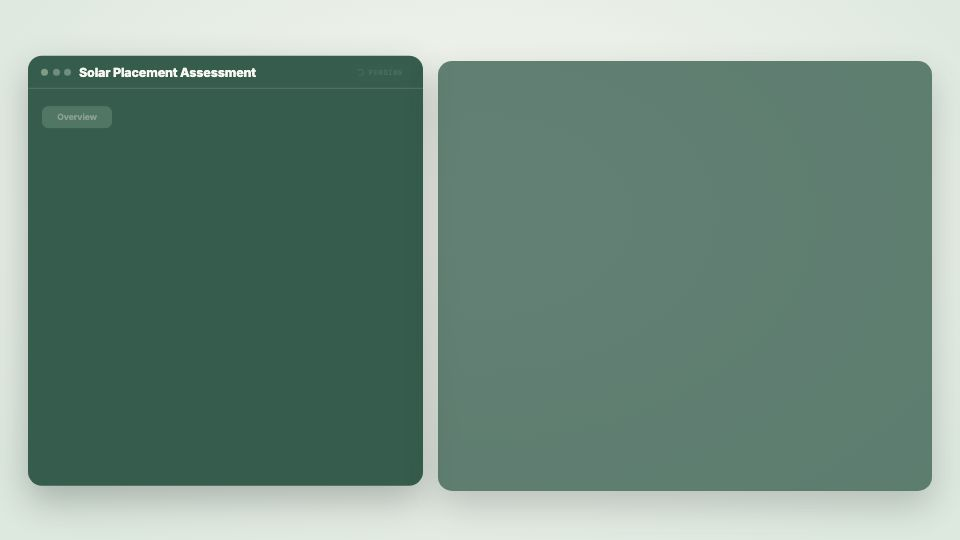
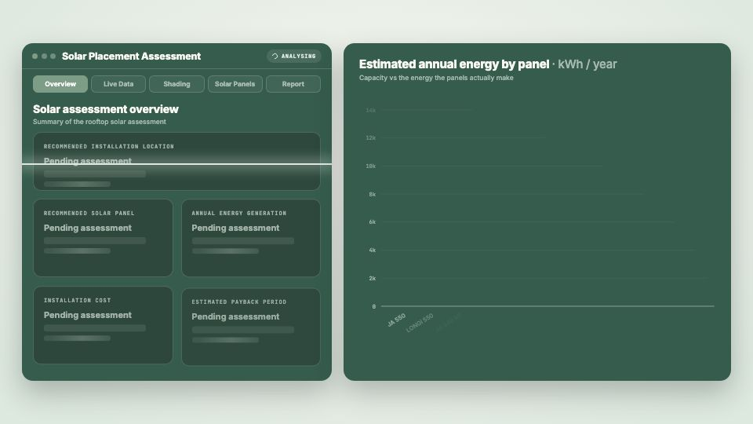
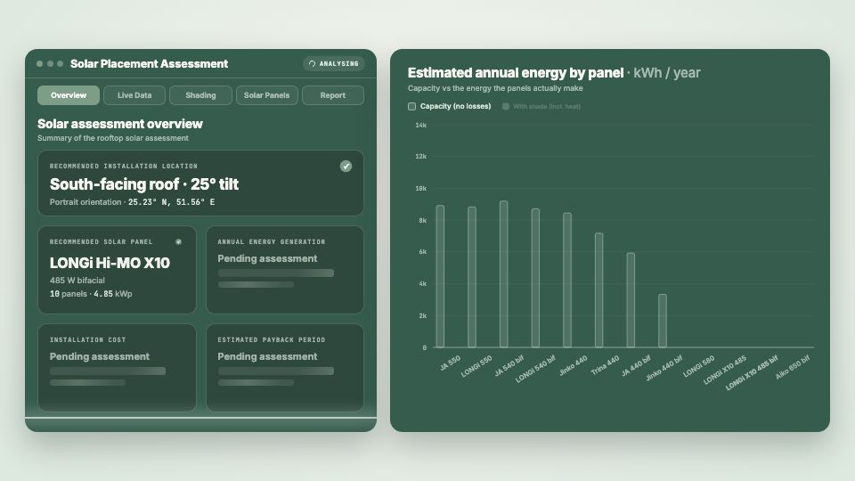
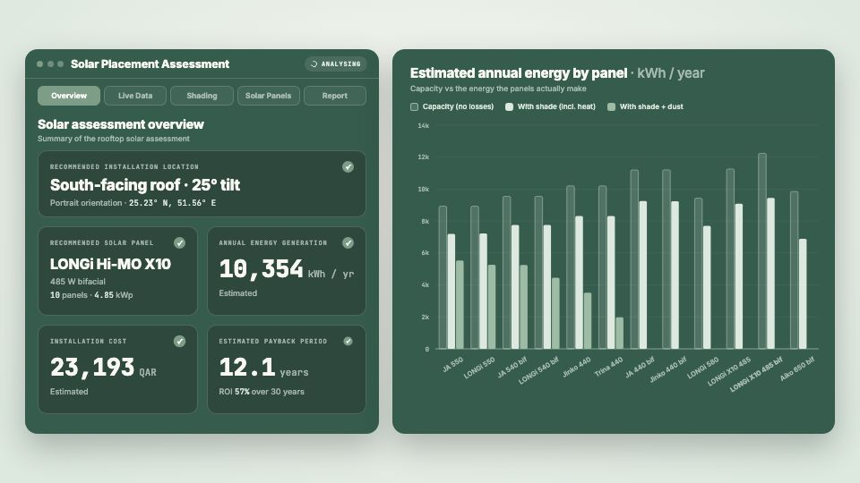
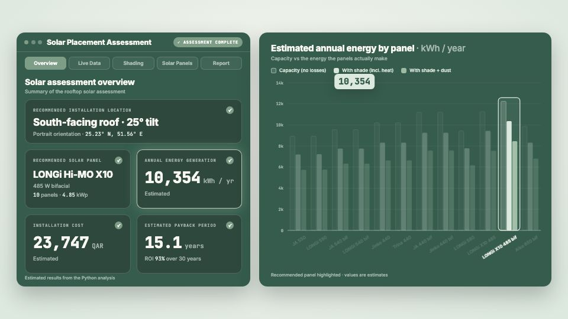
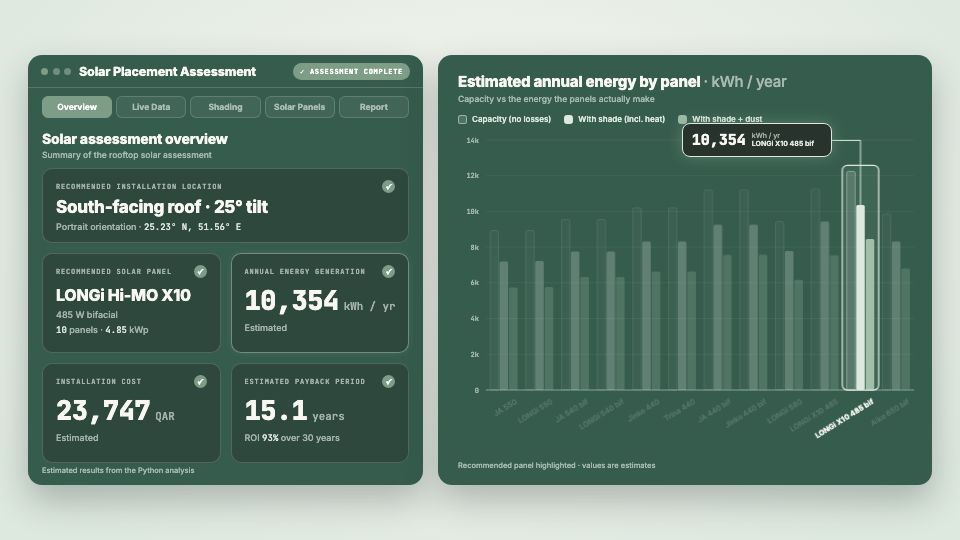

Dashboard & energy chart, rebuilt in motion
Both screens are now built from scratch in the dark UI, not from screenshots, so every card, number and bar animates. The 7-second sequence replaces the static dashboard in Section 7.



Windows rise in
The app window and the chart card slide up. The title bar, tabs and heading follow one after another. The status reads Pending.

Pending, then analysing
The cards show "Pending assessment" with a shimmer, just like their real app. A scan line sweeps down and the chart gridlines draw across.

Cards resolve, capacity bars grow
Each card ticks off and its number counts up: location, panel, 10,354 kWh/yr, 23,747 QAR, 15.1 years, 93 %. The capacity bars grow from left to right.

Losses appear
The "with shade" bars grow in, then the "with shade + dust" bars, so the drop from capacity is easy to see. The status turns to Assessment complete.

Spotlight on LONGi X10
The other panels dim and the LONGi X10 485 bif bars get a frame. The 10,354 value lifts off the energy card and flies onto the chart.

Value linked to its bar, hold
A leader line ties the callout to the "with shade" bar, which shows 10,354 exactly. The full dashboard holds before the closing pull-back.